1.将安装包内所有文件解压至同一文件夹内,如图
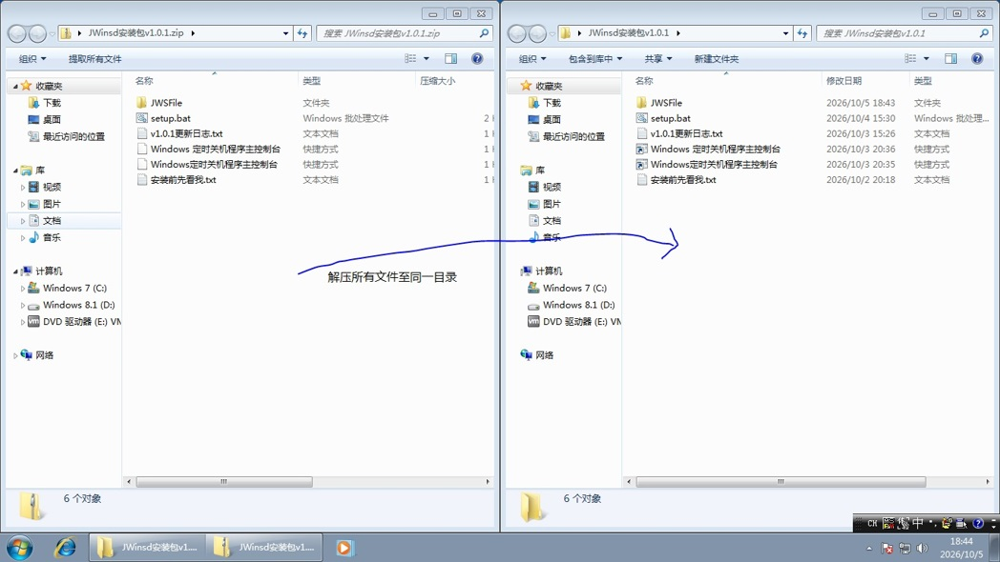
2.右键“setup.bat”,选择“以管理员身份运行”
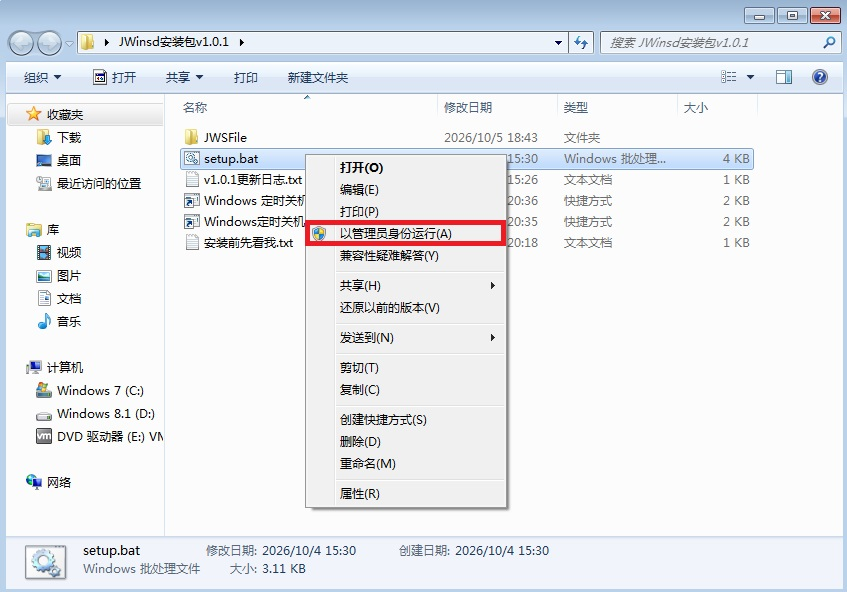
3.在下面这个窗口，按i以安装

初次打开，可以使用开始菜单或刚刚解压的快捷方式
以下展示了程序的功能及其使用方法
在主控制台，输入c并回车可进入此功能，下面的s,r,l对应几个关闭模式，e可以退出此功能。当“如果您输入……继续...”出现后，按下任意键，并静待“任务计划程序”窗口出现。
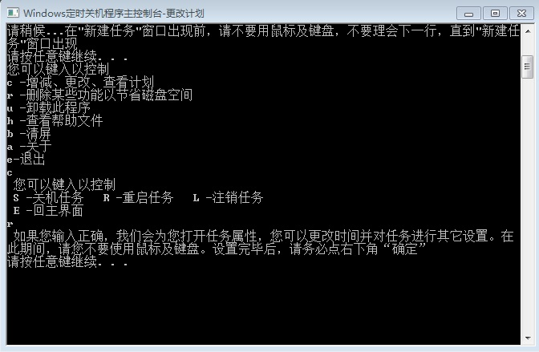
如果“任务计划程序”打开后没有出现“创建任务”窗口，请您关闭它，回到JWinsd主控制台，按任意键后，请输入y并回车，我们将在运行任务计划程序后等待更长时间
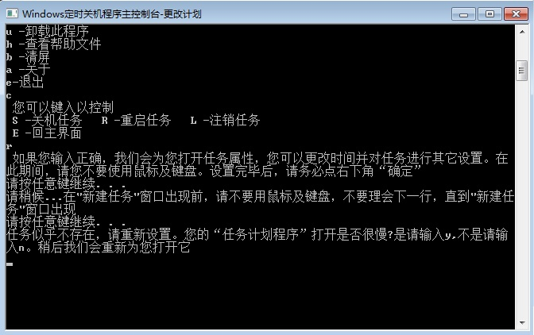
来到创建任务窗口，可以对任务进行各种设置。完成后，请务必点击“确定”，无论您是否对计划进行了更改，随后，您可以关闭任务计划程序
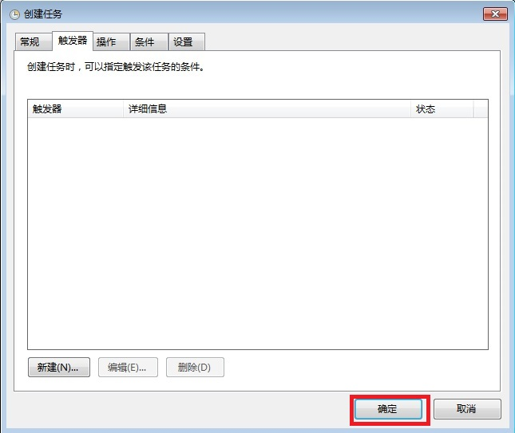
任务计划程序的具体功能可以参考此文章此功能允许您删除一些JWinsd的程序文件。在主控制台，输入r并回车可进入此功能
下图中，蓝色部分是文件的编号，红色部分是当前存在的文件。在下方输入编号以删除文件，输入z以退出此功能

查看此网页。在主控制台，输入h并回车可进入此功能
清空此窗口上的内容。在主控制台，输入b并回车可使用此功能
查看JWinsd的描述。在主控制台，输入a并回车可进入此功能
卸载JWinsd。具体参见下一章
退出Windows定时关机程序主控制台
关机、重启的界面如图，想取消此次关闭请按“取消”
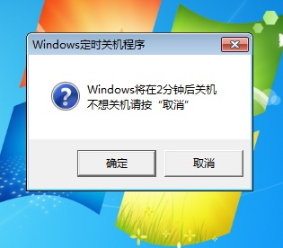
如系统出现以下通知，则关闭已取消
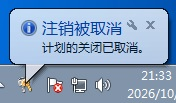
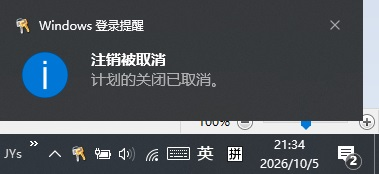
注销（退出登录）的界面如图
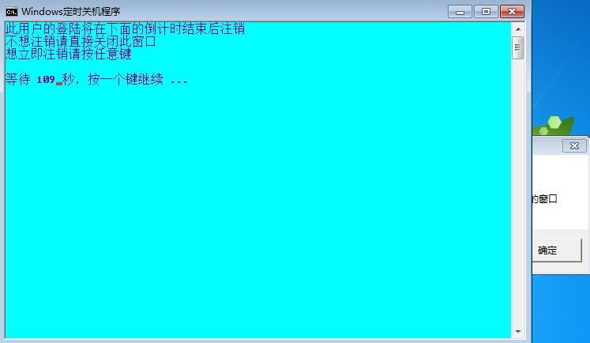
关闭所有来自“Windows定时关机程序”的窗口即可取消注销
想要卸载此程序，请进入主控制台，输入u并回车。(设置、控制面板中的卸载无法使用，作者深感抱歉，正在努力解决)
您会来到这个窗口，按任意键以卸载
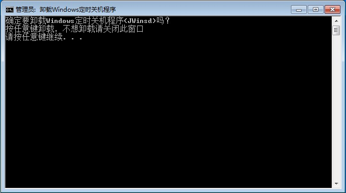
如果您想保存以创建的关闭任务，请您在此时按y
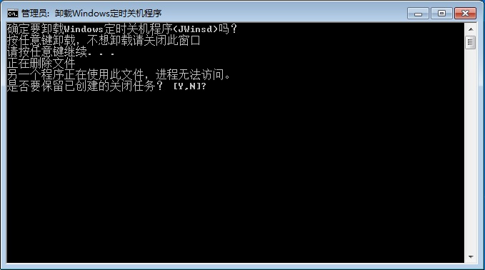
提示“已完成”时，卸载已完成（如果此网页在卸载时仍被打开，它可能无法被删除）